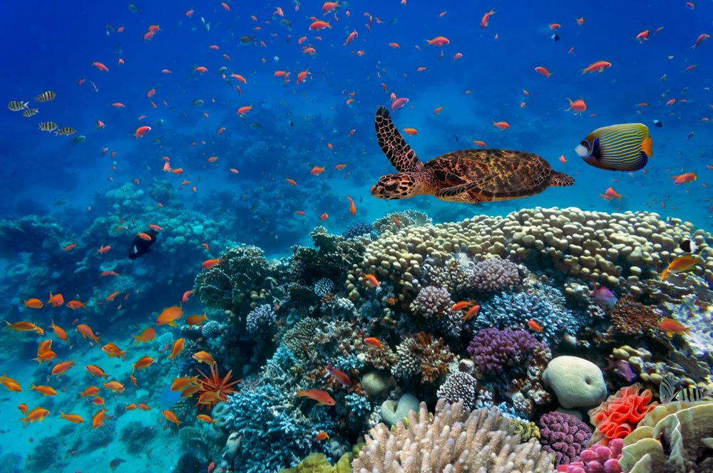
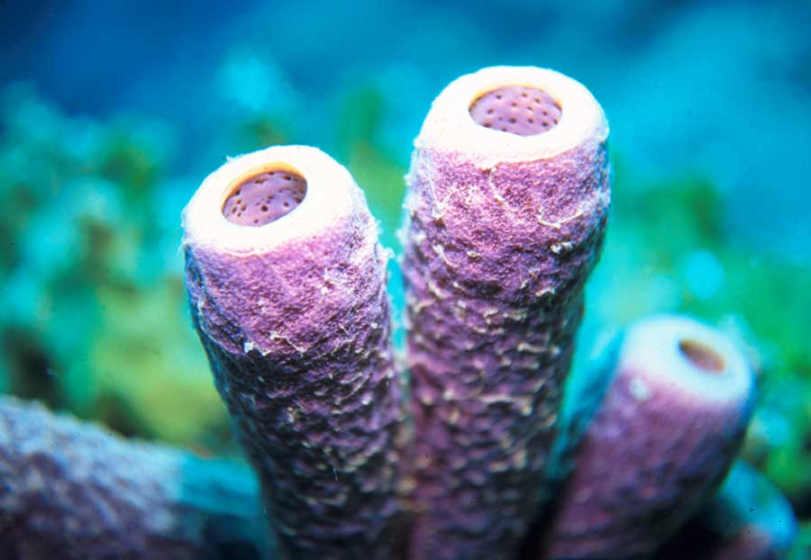
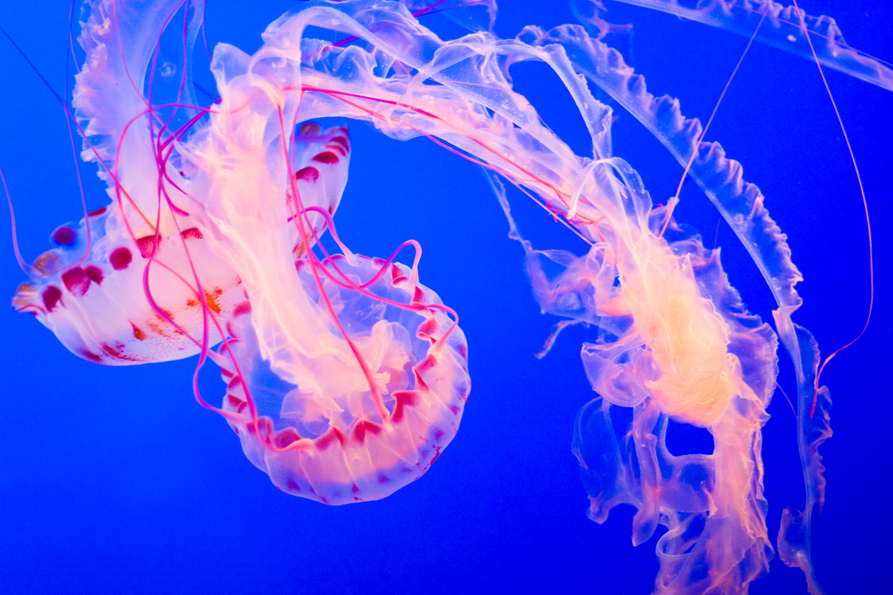
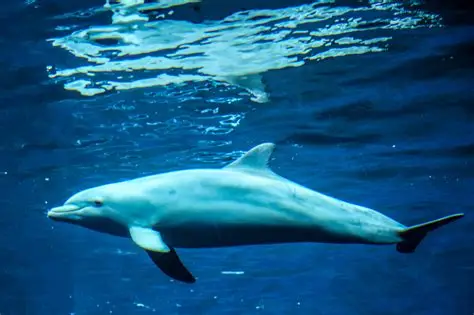

Ecossistema marinho é o conjunto de ambientes de água salgada (oceanos e mares) onde fatores físicos como luz, temperatura e salinidade interagem com comunidades de algas, peixes, corais, moluscos e mamíferos formando redes ecológicas interdependentes.

Os poríferos são animais aquáticos muito simples, encontrados principalmente no ambiente marinho.
Clique aqui para saber mais
Os cnidários incluem animais como águas-vivas, corais e anêmonas-do-mar.
Clique aqui para saber mais
Os mamíferos marinhos são animais adaptados à vida no mar, como baleias, golfinhos e focas.
Clique aqui para saber mais